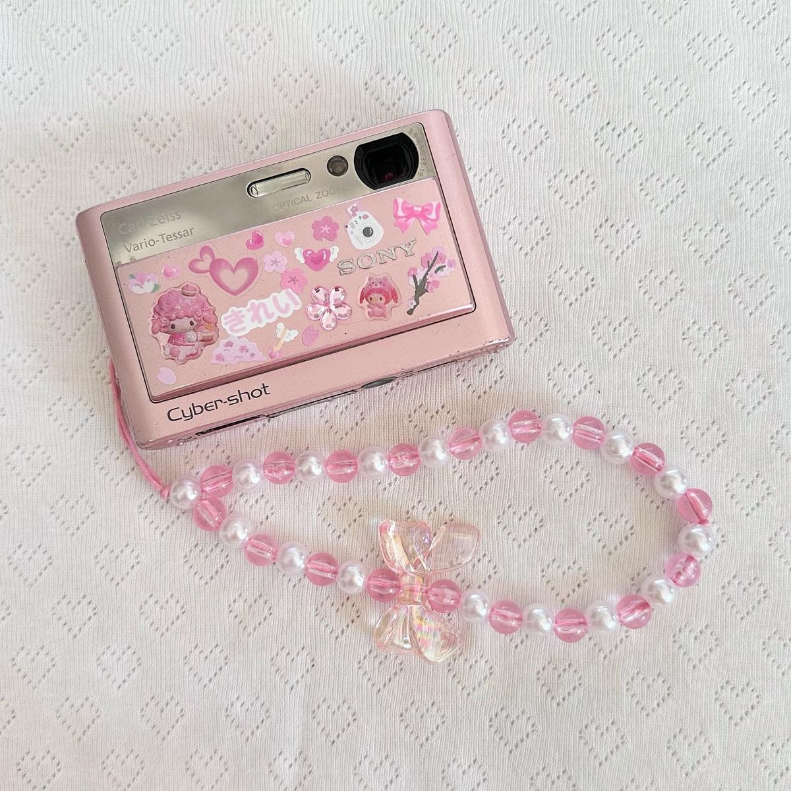
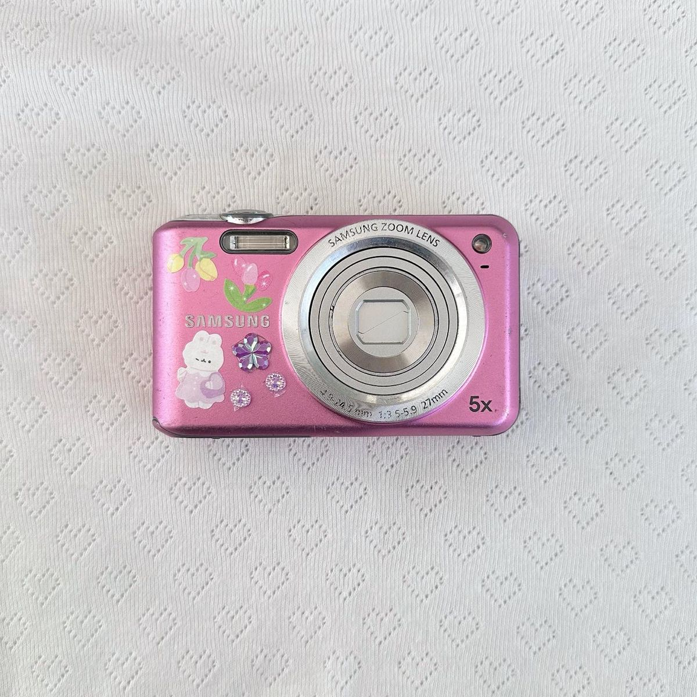

Apa itu DIGISTYLE ?
DIGISTYLE merupakan arsip model-model kamera digital dari tahun 2000an yang kembali menjadi tren di kalangan orang muda karena bentuk dan warnanya yang unik serta hasil foto yang khas sesuai masing-masing merk kamera.
LIHAT KAMERA



